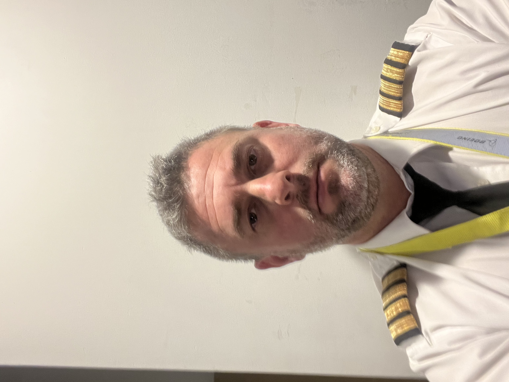

My Resume
Maximiliano Contreras
- Date of birth: 03/08/1982
- Nationality: Argentinian/German
- Dean Funes y Arroyo Garin S/N
- Barrio San Benito lote 46, Buenos Aires, Argentina
- Phone: +54 113064-6549

Education/Licenses
- ICAO/FAA ATPL
- B737NG/MAX Type Rating
- High Schooll : Saint Hildas College. Bilingual English/Spanish Diploma
- Cambridge IGCSE and AICE exams
- INAC National Civil Aviation Institute
Work experience
- Total Time: 9000hrs
- B737 Captain: 5500hrs
- 2013-Present: B737NG/MAX Captain , Aerolineas Argentinas.
- 2009-2013: A340 FO, Aerolineas Argentinas.
- 2007-2009: B737-200 FO, Aerolineas Argentinas.
- 2005-2007; CFI PPL,ME,CFI,ATPL Flügle Flight Schooll.
Skills
- Begginer Web Developer.
- Begginer:HTML, CSS, Javascript, SWIFT, Python.
- Violin Player.
Awards, certifications
- FAA ATPL B737 Type Rating
- PADI Advanced Open Water Diver Certificate